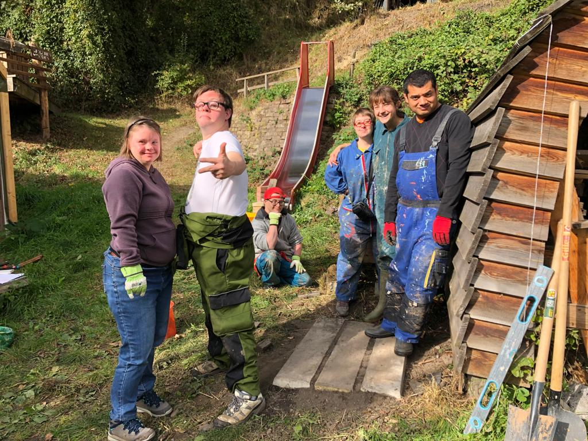
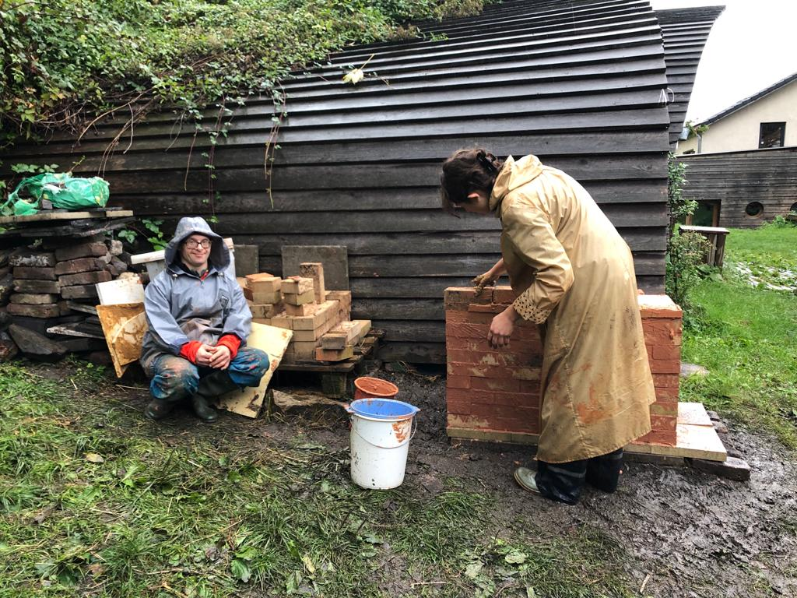
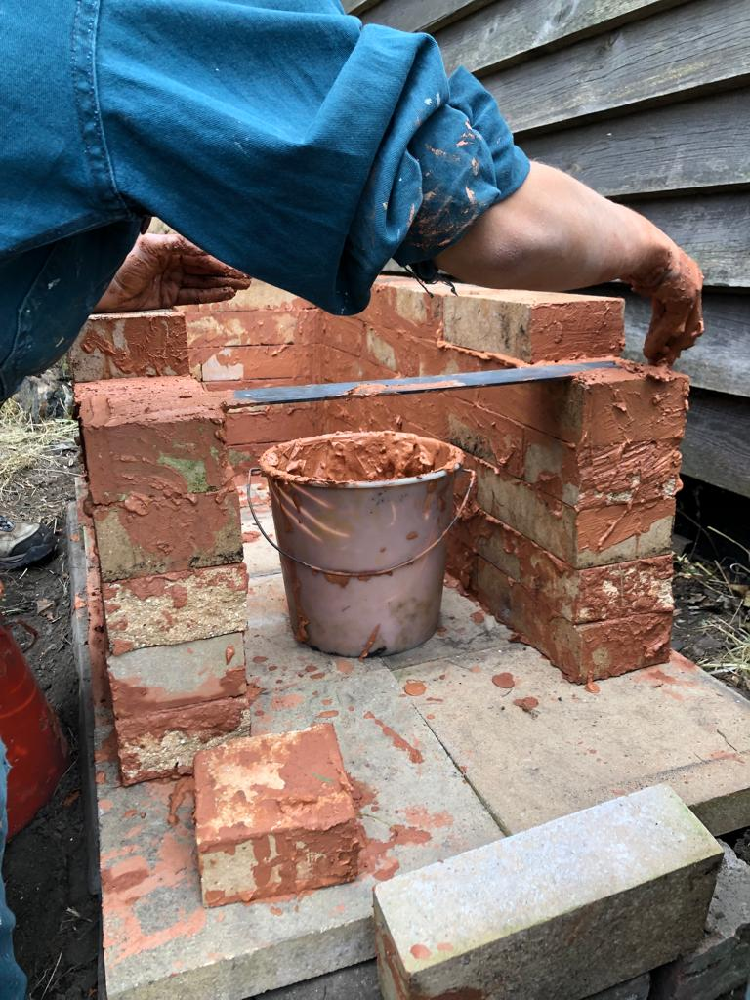
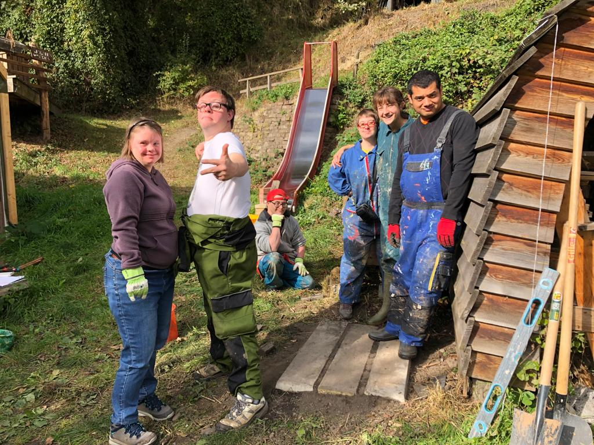
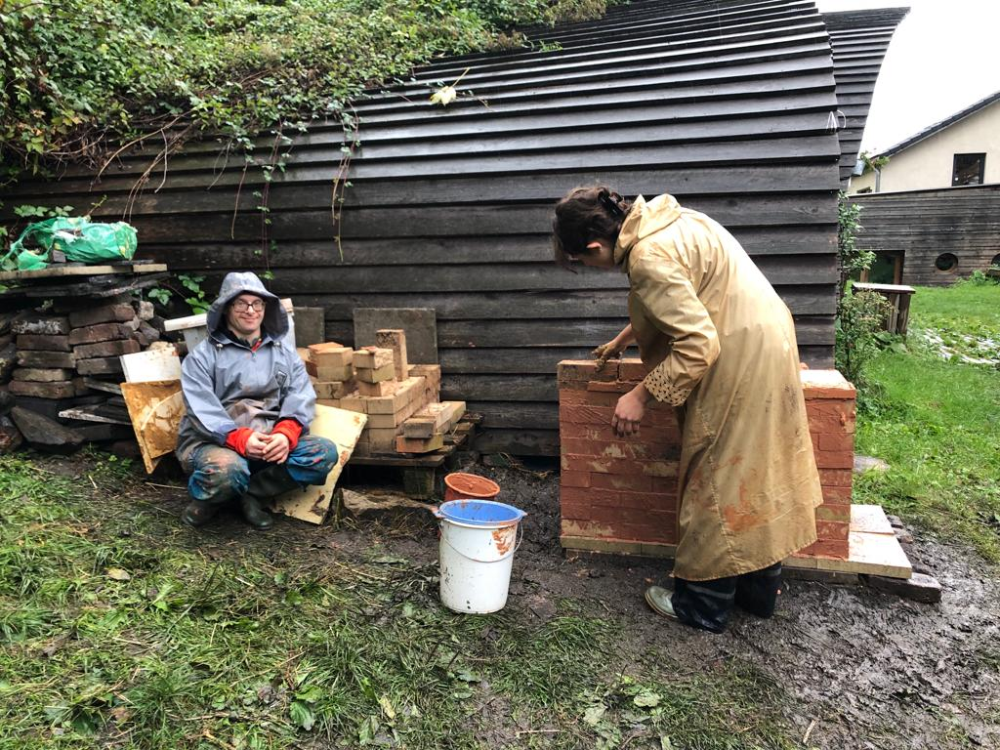
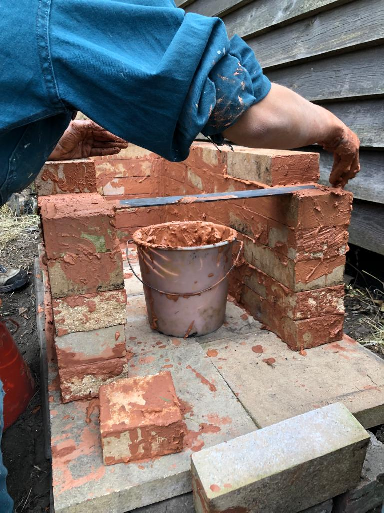

2023 . Liège, Belgique. Four à la Cité s'invente
Ed un giorno, dopo lunghe riflessioni e richerche, ho incontrato i nostri vicini de La Cité s'invente, a cui sono piaciute le mie idee, mi hanno messo a disposizione spazio e mattoni refrattari di cui non sapevano che fare, ed ho potuto costruire il nuovo forno da loro, su un bel terreno accogliente e protetto. Lo abbiamo costruito, il forno, con cinque artisti dell'associazione Creahm de Liège, tra entusiasmo, sole e pioggia.
 




